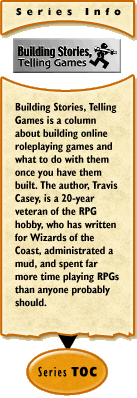

|
Building Stories, Telling Games #47: Thinking Mechanically, Part 5: Numbers and Not Numbersby Travis S. Casey Last time, I talked a bit about things that can't be represented well with numbers — specifically, descriptions, histories, and personalities. However, in addition to things that can't easily be described with numbers at all, there are things where having more information than just numbers can be helpful. To give some examples, I'm going to refer to some existing games. First off is Ron Edwards' Sorcerer. In it, characters have three Scores — Stamina, Will, and Lore. Each score also has a description. This description tells why the score is high (or low, as the case may be). The descriptions are not used in mechanics, but players and GMs are encouraged to think about the descriptions attached to characters scores and use them in describing events in the game world. (To go back to the "Three R's" of mechanics that I presented in part three of this series, the descriptions are used in the Representation phase.) Sorcerer isn't the first game to have players attach descriptions to things that are rated numerically, but it's different from most other games which use the technique in that players are supposed to pick their descriptions from a given list, rather than just making them up. Arbitrarily made-up descriptions would be hard to handle in a computer RPG in any meaningful way... but a restricted list of descriptions could be handled, possibly as fodder for the portion of a system which describes or shows the results of an action — again, the Representation phase. Second is Kirt Dankmeyer's game Faster, Better, Cheaper. In it, characters have traits, much as they do in many other RPGs — but instead of having a numerical rating, they have a description. For each trait, the character can be two of Faster, Better, or Cheaper. If the character is Faster at something, he/she will get to go before another character using the same trait who isn't Faster. If he/she is Better, that gives a bonus to rolls with the trait. And if he/she is Cheaper, the character uses less resources to perform a task, which is implemented with a rule which can make players lose dice from a pool they draw from. This provides somewhat of a numerical difference, especially since it's possible to take the same adjective on a trait twice. However, there's a qualitative difference to being Faster instead of Better — a difference which goes beyond what is expressed by the traditional "rate each trait with a number" method. The third game I'd like to mention is Pelgrane Press' Dying Earth RPG, based on the works of Jack Vance. In it, characters have "abilities" (what would be called "skills" in a typical RPG); these are numerically rated, but some of them also have style descriptors. Just as in Sorcerer, there's a restricted list of descriptions for each ability to choose from. Unlike in Sorcerer, though, these aren't used just in describing results, but are also used to effect dice rolls — used in the Reduction phase, in other words. The different styles each have an opposing style they "trump" (are especially good against) and one they are trumped by (performing especially poorly against). In combat, for example, the attack style of "Speed" trumps the defense style of "Dodge", but is trumped by the defense style of "Misdirection". These, then, are all examples of areas where adding more than just numbers to a game can give extra flavor, and possibly extra strategy. What's Your Scale?When you're using numbers to describe things, one of the most important choices is one that it's actually easy to ignore — namely, what numbers? So a character has a Strength of 20 — that's nice to know, but what does it mean? That's a question of scale. Traditionally, most online RPGs have borrowed their scale from xD&D — zero is no ability in an area, 10.5 or thereabouts is "human average", and 18 or so is "human max". Many paper RPGs have also borrowed this scale. We'll call it the 3-18 scale, since that's the range xD&D ability scores could generally be. The 3-18 scale is a scale of convenience. The most convenient thing about it is that it matches up well with several different readily available dice sets: three six-sided dice, two ten-sided dice, or one twenty-sided die. For a paper game, this is a reasonably nice property. For a computer-based RPG, having ranges that fit available dice isn't very important, since a computer random number generator can generate pretty much whatever ranges you want. One thing to consider is the difference between "normal" and "human maximum" abilities. For example, on the 3-18 scale, "normal" strength is 10.5, and "maximum" is 18. This has an implication, though — the strongest humans can lift far more than twice what an average person can, so the amount that a character can lift in a system using this scale can't reasonably be a linear function of their strength score. First and second edition AD&D tried to get around this a bit by adding "exceptional strength", allowing characters who got an 18 strength and belonged to a fighter-type class to roll for their "exceptional strength" and be even stronger than a "normal" 18. This addition had several problems, however, chief among which was that characters with exceptional strength got much higher bonuses to melee attacks than those without it — which created a strong divide between those fighter-types lucky enough to get an 18 strength, and those who weren't. (Here's a basic design principle — giving out extra rewards on the basis of someone already having randomly gotten something good generally isn't a good idea.) This brings us to the subject of curved scales. A linear scale is simple for people to grasp — if the number is twice as high, you're twice as good/have twice as much/etc.; if it's three times as high, thrice as good/much/whatever; and so on. However, when you're trying to represent a wide range of things, linear scales can run you into some very large numbers. Games dealing with superheroes are the classic example — if the average person has a strength of 10, what's Superman's strength? Or the Hulk's? One way to get around this problem is with nonlinear scaling. There are a few basic types of such scales in use. First off, power-function scales. In such a scale, "how much" of something is a power function of the ability's score — often going as the square, but it could go as the cube or some other power. This can allow high abilities to be represented with fairly small numbers. It, however, starts to run into a problem with ease of comparison — if you're using a scale where effectiveness goes as the square of the score, how much better than a 10 is an 18? Someone who's fairly good at math can probably quickly tell you "more than three times as good, but less than four", but unless you're Rain Man, you're not likely to be able to do anything more precise than that quickly, and most folks won't even be able to do that without stopping to think. Of course, for a computer, that's not a problem... but remember that the human GMs and scenario designers have to work with the numbers too. And there's another problem... one of variable resolution. With a linear scale, you know that adding one to a score adds a certain fixed amount of something — perhaps it means that character can lift another ten pounds, or can run two miles per hour faster, but it means something. With a power-function scale, however, you no longer have that. Figuring out the difference between an ability of N and one of N+1 gets a bit more complicated. There is another kind of scale where the shift from N to N+1 is easy to understand, though — a logarithmic scale. In a logarithmic scale, adding one to the score means that the ability being measured is multiplied by a certain amount. This can allow large numbers to be represented with much smaller numbers — and it also has the nice property that you once again know what the difference between N and N+1 is fairly easily. Granted, it's a ratio now instead of an addition, but at least it's constant again. A logarithmic scale takes a bit of getting used to, but it has other properties that are very nice as well. I won't go into them all here, but instead will refer those interested in scaling to the games DC Heroes (and Blood of Heroes, which uses the same system, but not in the DC Comics universe) and TORG. Both these systems use a logarithmic scale to good advantage. Well, that's all for this time... next time, we'll continue on with thoughts on scales, preparing to get into some more nitty-gritty with numbers. See you in two weeks!
|